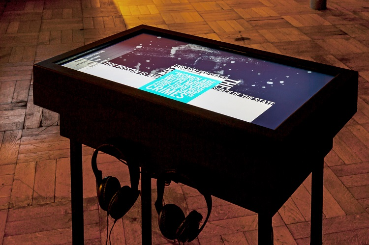

http://www.sharondaniel.net/
Public Secrets
Public secrets by Sharon Daniel is an interactive storytelling project which reveals
the untold secrets of incarcerated women in California state prison system. The testimonies and stories
gathered in this project from women in
prison reveal the hidden information on justice system and the events that are never told.
This project uses a strong interface that goes with the theme. The colors used in the website design are black, white and blue. The navigation bar is located on the left side of the screen and its designed vertically which can be a little
confusing. The first page of the website provides information on the subject and on how to use the website and navigate through the stories. As soon as the user enters the website the story starts by Sharon Daniel’s voice which describes the
scene in the prison. The background music is well chosen which adds to the experience. As the story ends there are quotes of the interviews showing one by one which can be clicked. What seems confusing in this part is the way quotes show up
which gives the impression of interactivity with user’s mouse, however by moving the mouse after few seconds the user notices that the quotes show up randomly and are not interactive. As the user clicks on the story the story starts and there
is loading bar moving through the story square which shows the length of the story and how far the user has listened. This can be very helpful for the user to be able to understand when the story would end, and which story is playing. One
problem with the website is the fact the user’s mouse should always be on the story area for it to read, and if the mouse is moved by accident the story would stop playing. In the navigation bar there are few options that are not clear, for
example the inside and outside are not distinguished properly and could seem confusing. The sound effects for the mouse clicks are well chosen and could resemble the sounds heard in prison. It can be said that there is a great amount of
information presented in this project, but the design of the website could make it little complicated to navigate through all the information. with each story there is a transcript option which makes the website accessible for all users. By
clicking the transcript, a window opens which also has other options of listening to more stories by the same person and options for rewinding or stopping the audio. Personally, I was surprised to know that there are multiple stories told by
each person which wasn’t obvious in the main menu or in other screens and is only presented by clicking the transcript. Also, there is no back button in the screens which could cause the user to get lost between the stories. The overall design
of the website is minimal and modern, however there are problems with navigation through the website that could make the user confused in some areas.

https://www.sbs.com.au/theboat/
The Boat
The boat is an interactive graphic novel by Matt Huynh produced by SBS. The novel is
based on a short story by Nam Le about escaping Vietnam war to Australia on a boat.
The Boat has won many awards including World Illustration Award 2016, United Nations Association
of Australia Media Peace Awards, 5th Annual Illustrators Australia Awards and many more.
The website starts with a scene of a boat in a stormy ocean.
It has the title, the awards, 3 options at the bottom and a navigation bar on the right side.
The website is very easy to navigate with the bar which shows the chapters. It gives the user
the option to jump to different chapters while showing where the story is currently at.
There are 3 options of audio, auto scroll and full screen at the bottom which are very easy to understand.
The style of the illustrations is ink-washed which adds to the quality of the novel. The scene movements are amazingly picked based on the story, for example the movement of the boat in the stormy sea is resembled by the movement of the text
and the illustrations. The novel uses great music for different scenes which add to the experience. The background changes and moves with the scrolling while the main scenes are moving on the top layer and there is a great balance when each
background changes and fades away. The website is extremely effective and very easy to understand and navigate. Also, there are side stories with information on refugees and refugee camps with pictures.